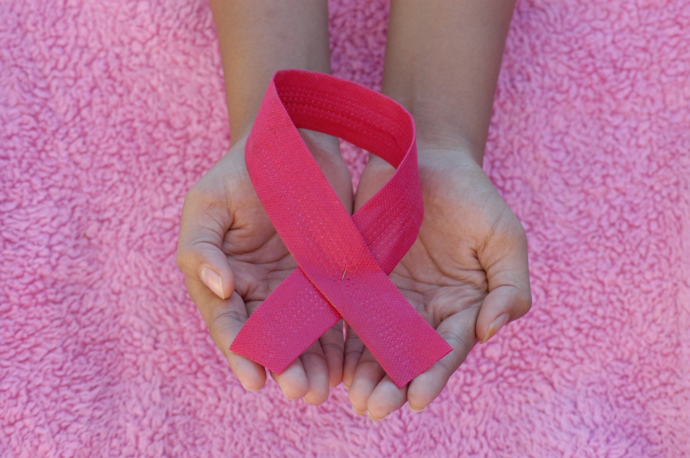
Circulating tumor cells, disease progression, and survival in metastatic breast cancer
循環腫瘍細胞（CTC）によって、転移性乳がん患者の病勢進行と生存率を予測できるかを検討しています。
もっと詳しく（PubMed）→がんを患う0～12歳の子供のために、キャンサーフリーバイオテックは最初の検査サービスを無料で提供します。血液中の循環腫瘍細胞（CTC）を培養して薬剤試験を行い、医師によるがん治療薬の選択を支援して、無効な投薬の可能性を減らします。
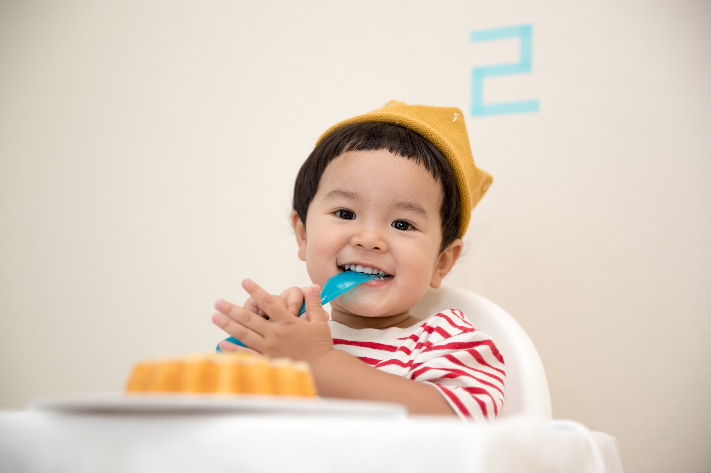
出典：台湾衛生福利部疾病管制署、世界保健機関（WHO）、台湾小児がん基金会。
夜空の星のように、これらの子供たちは明るく輝いています。一部の子供たちはまばゆい光を放ち、他の子供たちは控えめですが決然とした輝きを放ちます。私たちの使命は、暗闇の中で導きの光となり、誰も道を失わないようにすることです。 Little Star 設立の想い
現在のがん治療では、ほとんどの医師ががん診療ガイドラインに従って評価・治療・投薬を行っています。成人のがんとは異なり、小児がんでは治療の強度や方法、治療のリスクと効果、化学療法薬の副作用に対する耐性がそれぞれ異なります。高所得国では約80%の小児がん症例が治癒可能です。積極的な治療により、ほとんどの子供の病状はコントロールできます。
精密医療は、治療の無効の可能性を減少させるために、循環腫瘍細胞（CTC）を培養して薬剤試験を行うことを含むがん治療を選択するために使用されています。関連技術については、キャンサーフリーバイオテックのEVAセレクトをご覧ください。
がんケアと知識ゾーンへ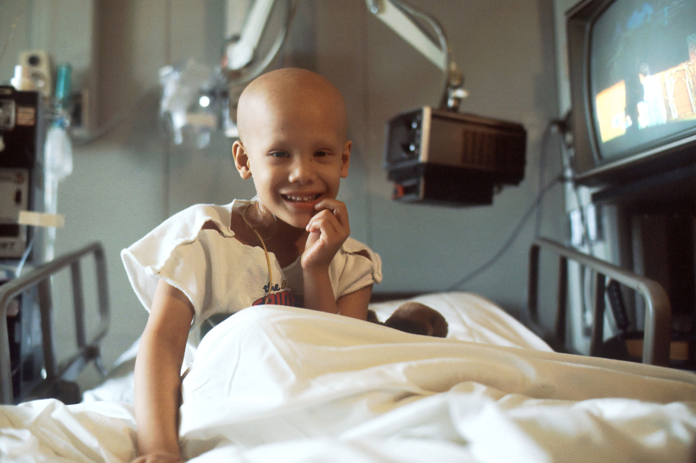
主治医にご相談いただくか、提供された電話番号でお問い合わせください。検査の流れは以下のとおりです。
検査が適しているかどうかを主治医とご相談いただくか、直接お電話でお問い合わせください。
血液中の循環腫瘍細胞（CTC）を用いて、その後の培養を行います。
生体模倣型腫瘍器官培養システムで培養します。
医師が選択した薬剤について薬剤試験を行い、無効な投薬の可能性を減らします。
健康教育（Health Education）の重要性は、人々に必要な知識と技能を提供し、健康的な生活を選択し、病気を予防し、生活の質を高め、健康上の問題に効果的に対処できるようにすることにあります。
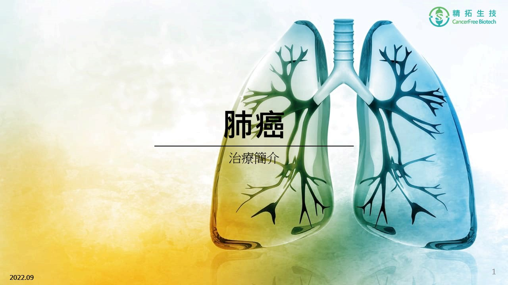
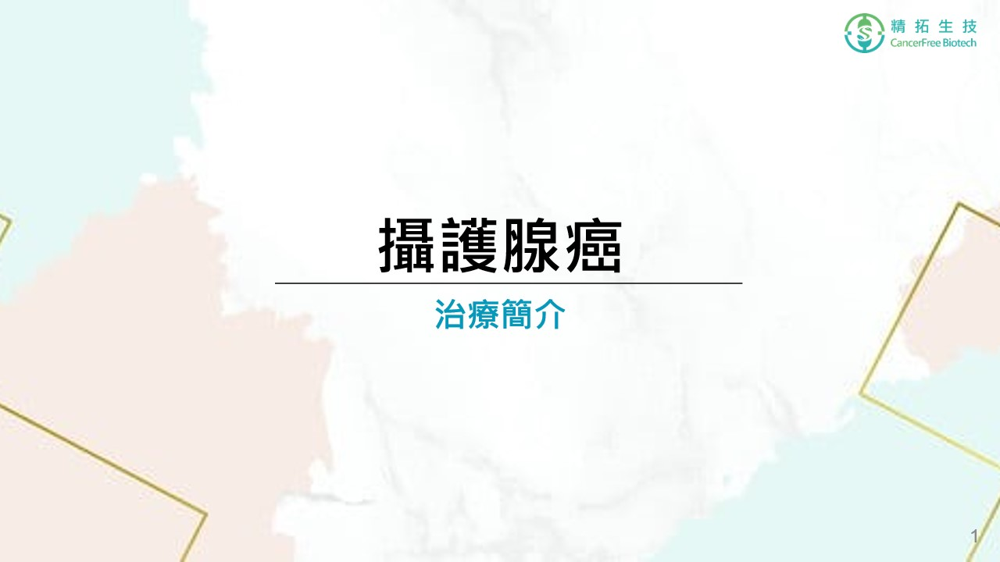
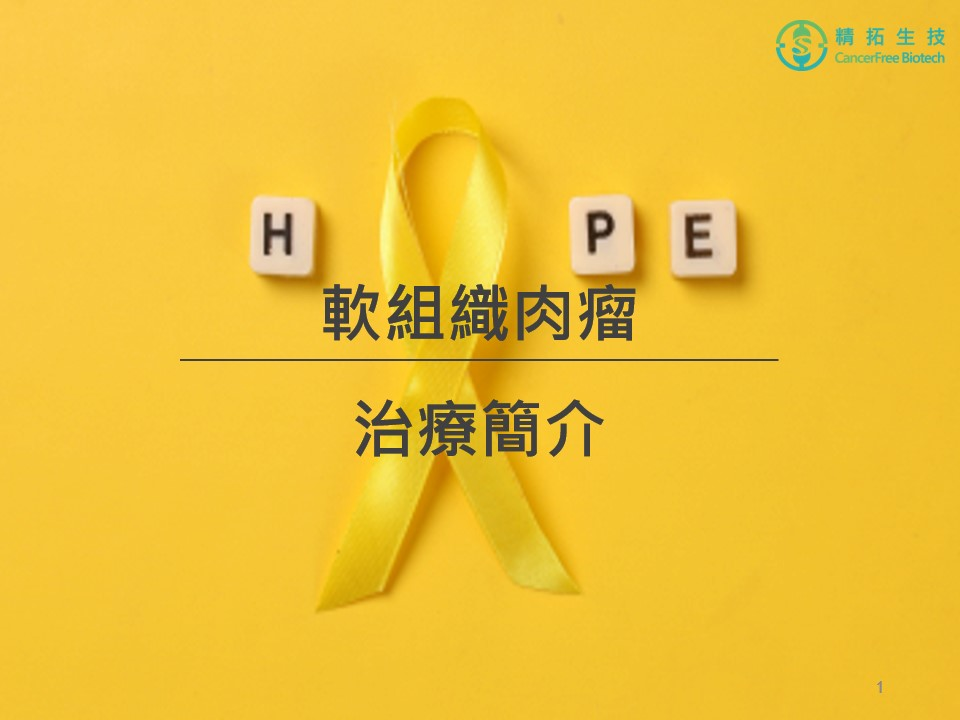
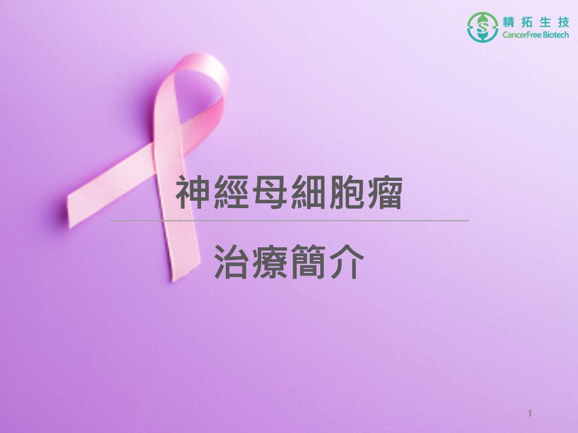

循環腫瘍細胞（CTC）によって、転移性乳がん患者の病勢進行と生存率を予測できるかを検討しています。
もっと詳しく（PubMed）→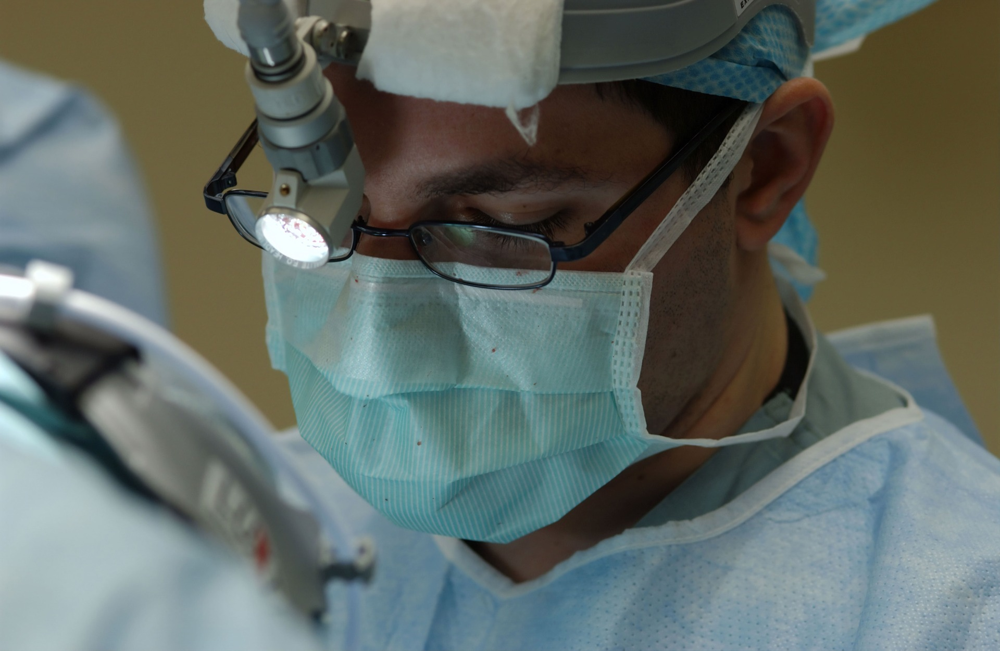
乳がんが脳に転移した患者の循環腫瘍細胞（CTC）を解析して鑑別を行い、CTCとがん転移との関係を判断します。
もっと詳しく（PubMed）→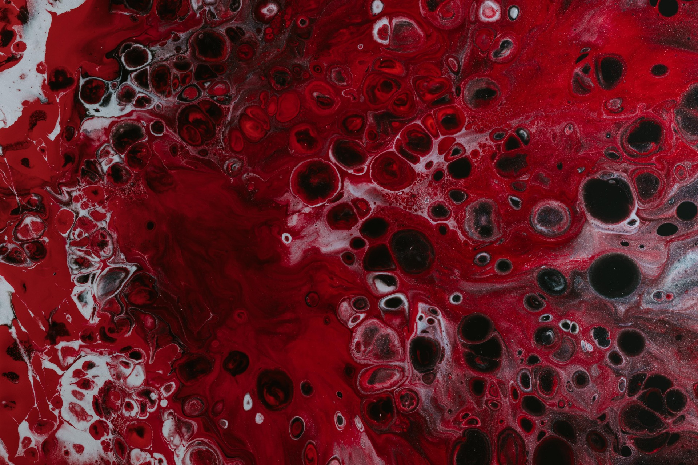
大腸がん患者の血液から循環腫瘍細胞を培養し、判定・鑑別を行います。
もっと詳しく（PubMed）→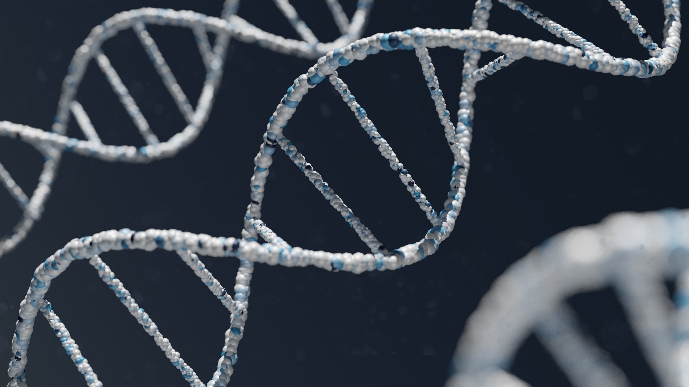
肺がん、乳がん、膠芽腫の患者の血液中のCTCを培養してDNA解析を行い、遺伝子変異の有無を調べます。
もっと詳しく（PubMed）→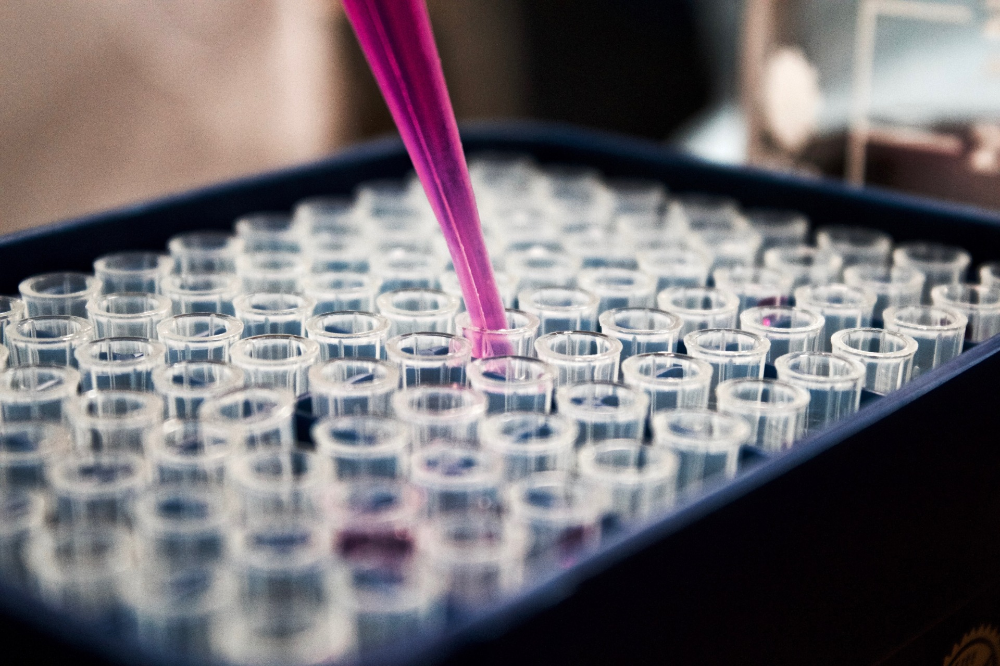
血液中のCTCを培養して薬剤への反応を試験し、個別化された精密な治療につなげます。この検査を通じて患者を評価し、治療の予後を示します。
もっと詳しく（PubMed）→乳がん患者の血液中のCTCを培養し、マウスでこのCTCの造腫瘍性を確認した後、個別の薬剤感受性試験を行います。
もっと詳しく（PubMed）→EVAセレクトによりCTCを培養して体外薬剤試験を行い、非小細胞がん、肝がん、肉腫の治療効果を観察します。
キャンサーフリーバイオテック EVAセレクト薬剤選択 →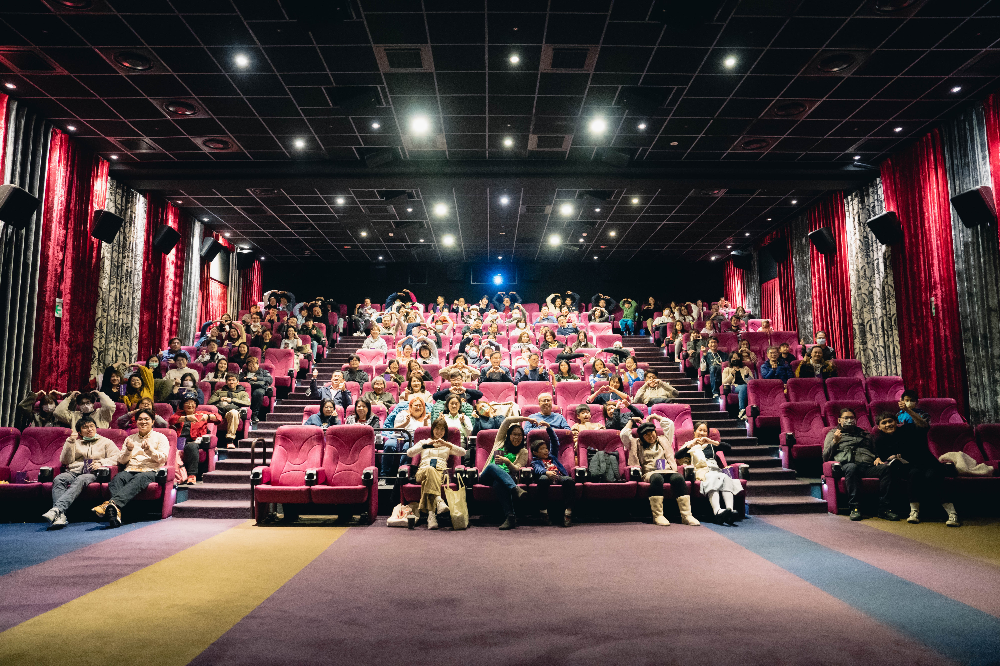
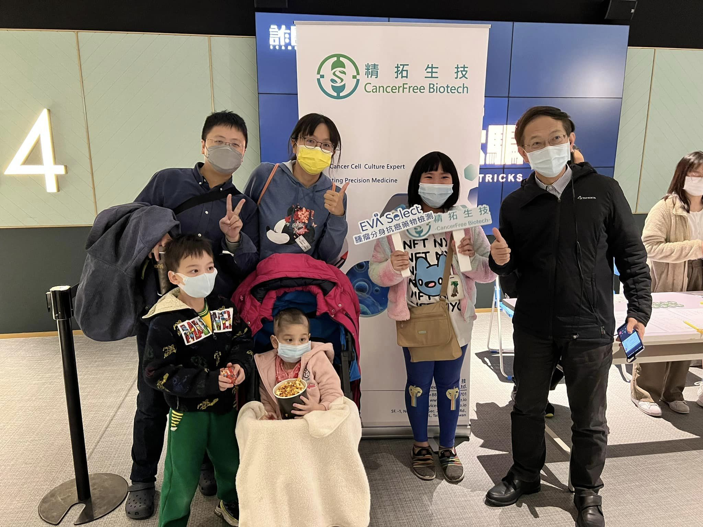
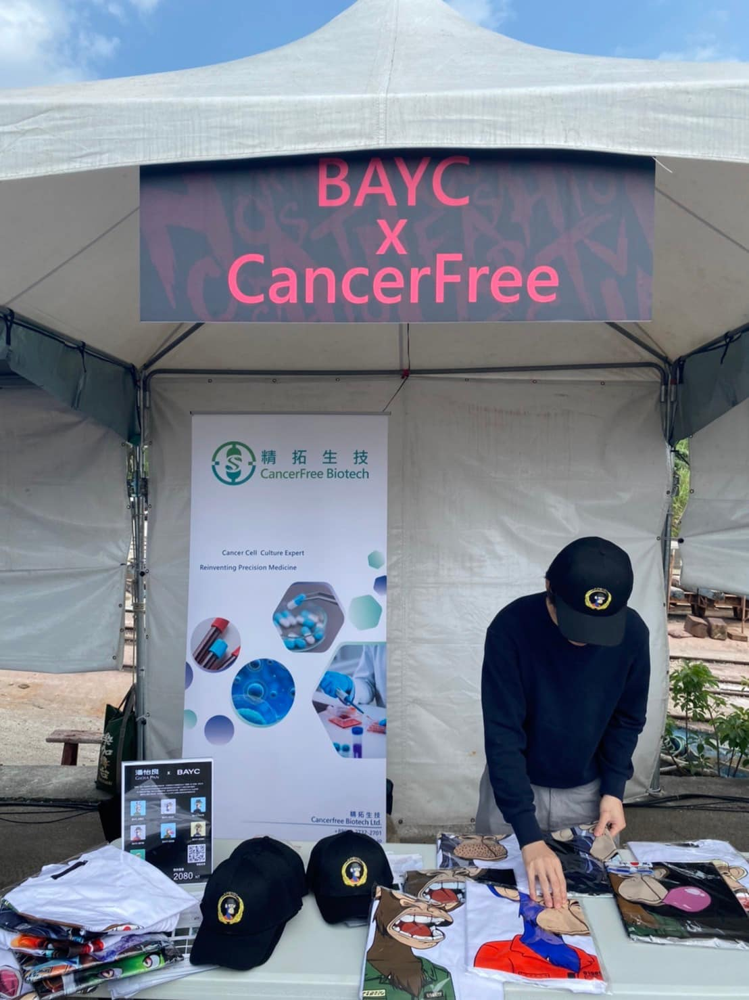
微光時分｜葉小姐
希少がんであるユーイング肉腫と闘う患者のストーリー
微光時分｜黃媽媽
骨肉腫と闘う患者の家族のストーリー
微光時分｜盧先生
骨肉腫と闘う患者のストーリー
がんを患う0～12歳の子供のために、キャンサーフリーバイオテックは最初の検査サービスを無料で提供します。主治医にご相談いただくか、提供された電話番号でお問い合わせください。
血液中の循環腫瘍細胞（CTC）を生体模倣型腫瘍器官培養システムで培養し、医師が選択した薬剤について薬剤試験を行うことで、無効な投薬の可能性を減らします。
成人のがんとは異なり、小児がんでは治療の強度や方法、治療のリスクと効果、化学療法薬の副作用に対する耐性がそれぞれ異なるため、精密医療によってがん治療薬の選択を支援することができます。
メールアドレス littlestar@cancerfree.io、電話 (02) 7752-2586 #104、サービス担当者 アナスタシア・チェン、または下のフォームをご利用ください。
主治医にご相談いただくか、提供された電話番号でお問い合わせください。サービス担当者：アナスタシア・チェン。